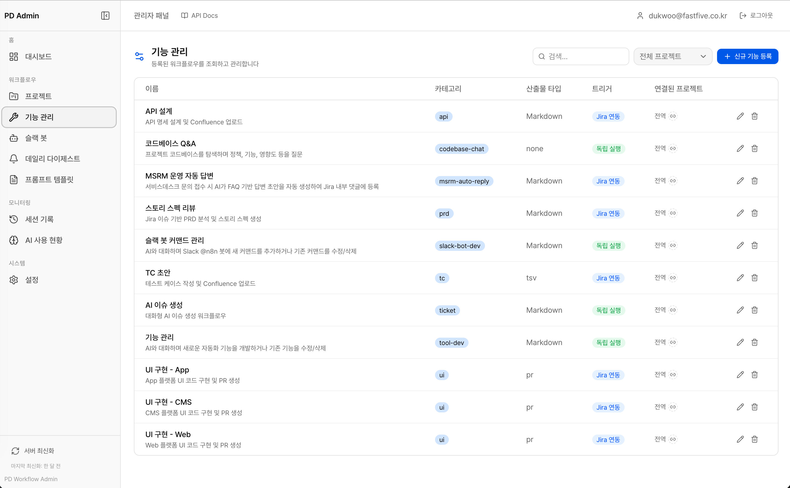
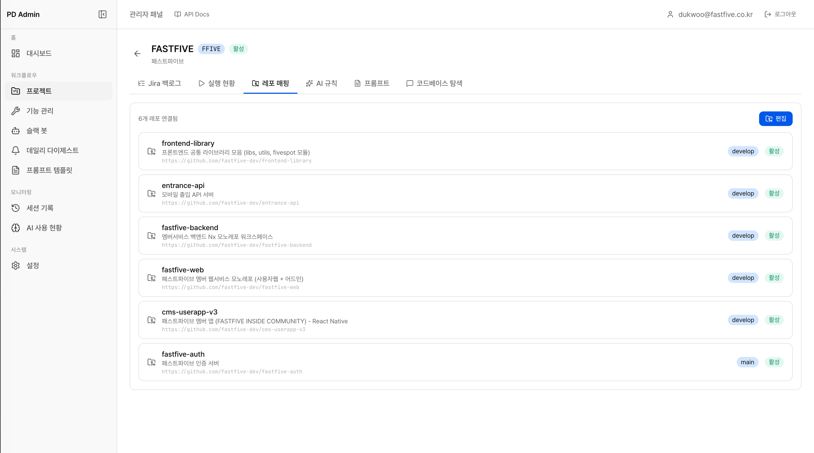
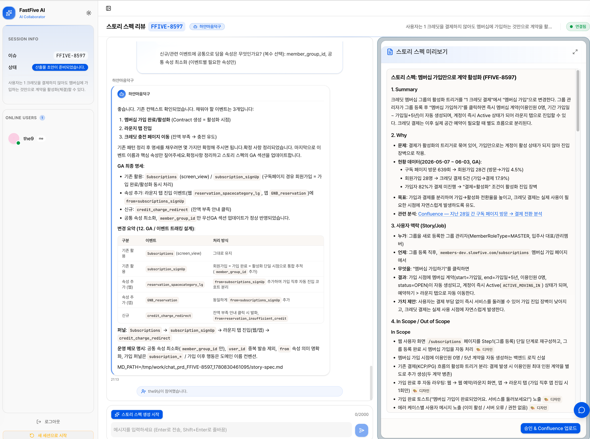

Career Case Study
AI 워크플로우 플랫폼 구축
Jira·Confluence·Slack·GitHub를 연결해 PRD, API, UI, TC, 티켓, Slack 봇 기능을 프롬프트 정의 기반 워크플로우로 실행·검토·업로드하는 사내 AI 실행 플랫폼을 설계했습니다.
FastifyTypeScriptReact 19SQLiteDrizzle ORMWebSocketZustand
문제 정의
산출물 품질 편차
직군과 숙련도에 따라 PRD, API/TC 문서, UI 초안, 코드 리뷰 산출물의 품질이 달라졌습니다.
업무 집중
Jira, Confluence, GitHub, Slack 사이를 오가며 특정 역할이 반복 산출물을 계속 만들어야 했습니다.
맥락 손실
요구사항 구체화, 생성, 검토, 업로드 단계가 분리되어 같은 내용을 반복 설명해야 했습니다.
구현 구조
Fastify 백엔드가 Jira 상태 변경, Slack 커맨드, GitHub 웹훅을 받아 워크플로우로 라우팅하고, chat-server와 Claude Agent SDK가 대화형 분석·생성 세션을 실행합니다. 관리자는 기능 관리 화면에서 카테고리, 산출물 타입, 트리거, 연결 프로젝트를 기준으로 워크플로우를 관리하고, 프로젝트별 레포 매핑으로 코드베이스 기반 작업 범위를 제한할 수 있습니다.
스크린샷 갤러리


